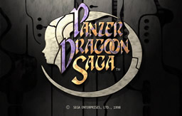
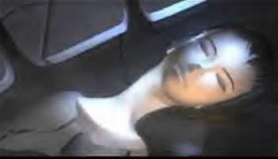
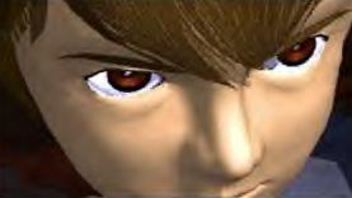
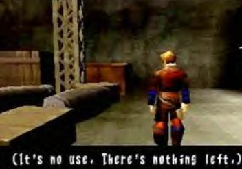
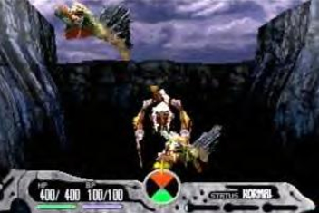
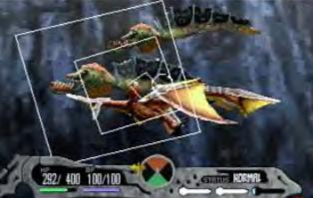
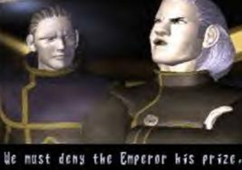
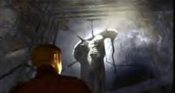

Review
By Mario Rodgers
Panzer Dragoon Saga is my favorite
video game of all time and will likely remain so. This ultra rare
game from the Sega Saturn was released in limited numbers so only
a few people got a chance to experience its majesty, but it may very
well be the single greatest game of all time. Panzer Dragoon Saga
was released only a short time after the ever popular Final Fantasy
VII, but in my opinion, Panzer Dragoon Saga utterly demolishes that
game. Where Final Fantasy VII was mechanical, Panzer Dragoon Saga
was vibrant, featuring beautiful imagery and otherworldly themes.
Where Final Fantasy VII's animation and movies looked like puppetry,
Panzer Dragoon Saga featured fluid characters with brilliant voice
acting. Both games are dramatic. However the drama in Panzer Dragoon
Saga really shines forth. The story is deep yet easy to comprehend.
Edge is a vastly more interesting main character than Cloud of Final
Fantasy VII. Edge is undoubtedly the hero of the game and a good guy,
yet he's also not perfect. At first he is motivated by revenge but
then finds a quest far bigger than his personal needs. He also suffers
torture, emotional anguish, and many internal conflicts. In essence,
he is a flawed, fleshed out character. He has become real to me where
many other RPG heroes struggle to achieve the same effect and wind
up looking like a mass of bad dialogue and terrible cliches. Many
of the other characters in this game are also just as fleshed out,
even the main villain, who blurs the line between noble and evil.
Even the background characters you meet seem like real people and
not just random, recycled polygon models. Grade: Legendary |
 Azel Sleeps peacefully |
 Edge's intense eyes |
 Exploring on foot |
 Fighting monsters |
 Fighting monsters part 2 |
 One of the many dramatic movie sequences |
|  Edge discovers Azel |